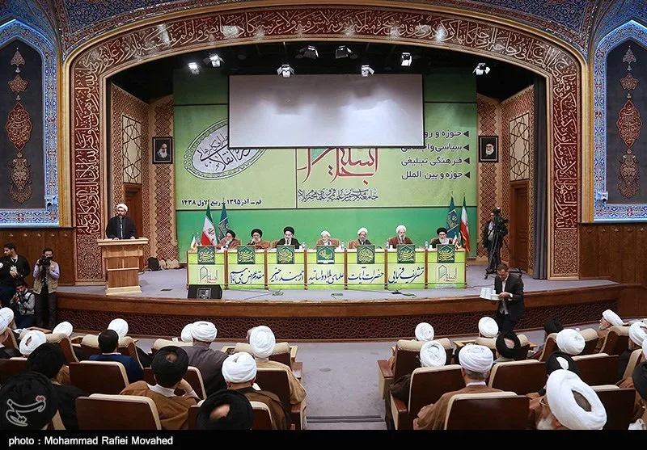
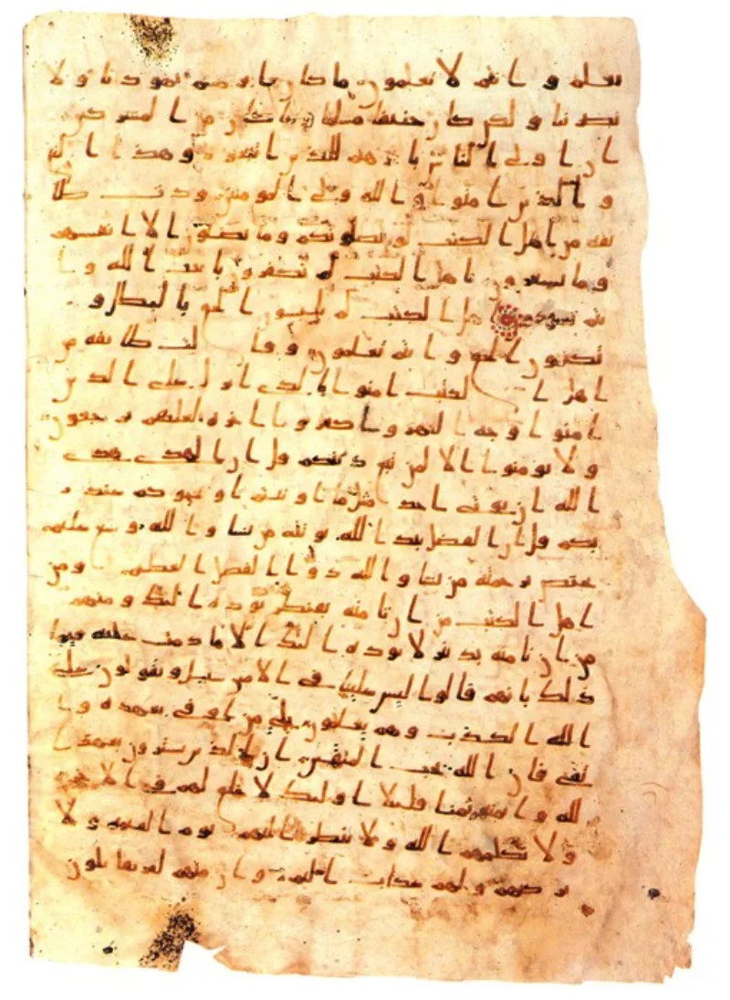

Don't use: 'Muslims are commanded to lie' (taqiyya)
Don't useThe Muslim answer holds up. Do not lead with this one.
The claim
That taqiyya is a broad order to lie to unbelievers. So nothing a Muslim says can be trusted.
Not in talk. Not in public life.
Not at an interfaith event.
Why it is wrong
The old law books treat it as leave, not as an order. It lets a man hide his faith under force.
It also covers the case where his life is at risk. See Quran 16:106, and Quran 3:28, "unless you fear them." It grew up mainly in Shia law, under Sunni attack.
The base rule in Islam is that lying is a grave sin.
What is really there
Something much smaller, and on the record. Deceit is allowed in war — "war is deceit" (Sahih al-Bukhari 3030).
And Muhammad allowed false words in the killing of Ka'b ibn al-Ashraf. That is the version this site's taqiyya case sets out.
Why it backfires
The big claim cannot be tested. If every denial is itself taqiyya, then nothing can ever count against you.
People hear that move and stop trusting the rest of what you say. It also gets the rule wrong, and your friend can show you that in seconds.
What to say instead
The small version, which holds up. Islam lets a man hide his faith under threat.
It allows deceit in war. And Muhammad did allow false words in one killing.
Say that. Do not tell the man in front of you that he is lying.
That is unfair, and it ends the talk.
What to say
"I am not going to accuse you of taqiyya. That would be unfair and it would end this."



How they answer this — at its strongest
Do not use this: taqiyya is leave to hide your faith, not an order to lie.
The correction is that taqiyya in the old law books is leave, not an order. It lets a man hide his faith under force, or when his life is at risk (Quran 16:106; and 3:28's unless you fear them). It was worked out mainly in Shia law, under Sunni attack. The base rule in Islam is that lying is a grave sin.
What is really there is smaller, and on the record. Deceit is allowed in war — war is deceit (Sahih al-Bukhari 3030). And there are cases such as the false words used in the killing of Ka'b ibn al-Ashraf. That is what this site's taqiyya case sets out.
The verdict
Drop the big claim: the small one is true, and it holds up.
Here is why it backfires. The big claim cannot be tested. If every denial is itself taqiyya, then no evidence can ever count against you. People hear that move and stop weighing the rest of what you say. It also gets the rule wrong, and a Muslim can show you that in seconds.
Say the small version instead. Islam lets a man hide his faith under threat. It allows deceit in war. And Muhammad did allow false words in one killing. That is on the record, it is damaging, and you can hold it. Telling the man in front of you that he is lying is unfair, and it ends the talk.
Sources
- Taqiyya — Wikipedia (doctrine overview and scope)
- Sahih al-Bukhari 3030 — 'War is deceit'
- This site — taqiyya-deception (the honest version of the doctrine)